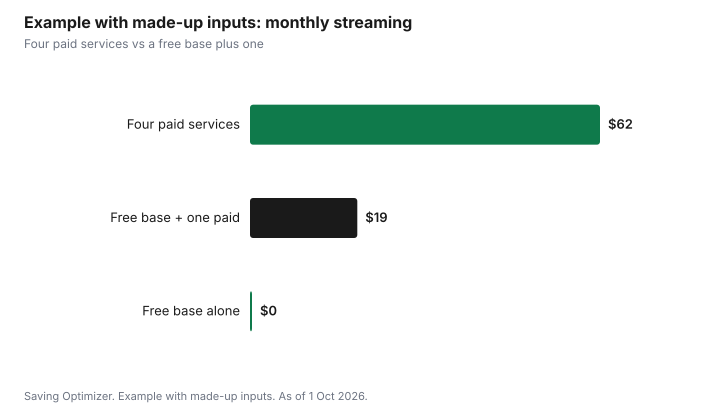

Entertainment · Canada
Free, Legal Streaming in Canada: CBC Gem, Ad-Supported Services and Your Library
You can build a solid free, legal streaming setup in Canada from three pieces: CBC Gem's free, ad-supported tier, the streaming services your public library offers with a card, and free ad-supported apps available in Canadian app stores. CBC Gem also sells a Premium tier that removes ads from on-demand shows. Toronto Public Library, for example, lists hoopla, Kanopy and Broadway on Demand among its streaming video services. Free services carry ads and have smaller or older catalogues than paid ones, so many households pair the free base with one paid service at a time, switching every few months instead of paying for several at once.
Key takeaways
- CBC Gem has a free tier with ads; Premium removes ads from on-demand titles (CBC says live streams and a few titles may still have ads).
- Library streaming is free with a card. Toronto Public Library lists hoopla, Kanopy and Broadway on Demand.
- Free ad-supported apps differ by country. Check what your device's Canadian app store offers.
- Free services have ads and smaller catalogues. Pair them with one paid service at a time.
- Avoid unlicensed streaming sites, which can carry malware and scams.
- Example with made-up inputs: a household cuts $62 a month of streaming to $19.
Which free services work in Canada
Streaming rights are sold country by country, so a free app that works in the United States may not be available in Canada, or may have a different catalogue. The reliable approach is to search your device's Canadian app store and your library's website rather than relying on lists written for other countries.
| Source | What it offers | How to get it |
|---|---|---|
| CBC Gem (free tier) | CBC shows, films and live streams, with ads | Free account on the web or app |
| Library streaming | Films, documentaries, TV and performances | Library card; Toronto Public Library lists hoopla, Kanopy and Broadway on Demand |
| Free ad-supported apps | Older films and series, live-style channels | Your device's Canadian app store |
| Broadcaster websites and apps | Some recent episodes, often with ads | Check each broadcaster |
| Library discs | DVDs and Blu-rays | Place holds through the catalogue |
CBC Gem
CBC Gem is the public broadcaster's streaming service. CBC's Premium page describes Premium as ad-free on-demand streaming, with access to CBC originals, exclusive shows, films and pre-releases, and notes that live streams and a small number of on-demand titles may still contain ads because of licensing. The free tier carries ads. Check CBC's page for the current Premium price before subscribing.
Ad loads and catalogues
Free services pay for themselves with ads. Expect ad breaks during shows and films, and a catalogue weighted towards older titles. That suits background viewing, classic films and children's shows; it suits new releases less well. If ads bother you, the free tier is still useful for trying a service before deciding whether its paid tier is worth it.
| Factor | Free, ad-supported | Paid |
|---|---|---|
| Cost | None | Monthly fee |
| Ads | Yes | Fewer or none, depending on the plan |
| New releases | Fewer | More |
| Catalogue | Smaller, often older | Larger |
| Best for | Background viewing, classics, kids' shows | New series and films |
Library streaming
Library streaming is the best-kept secret in free entertainment. Toronto Public Library's video page lists hoopla, for borrowing movies and TV shows to stream in a browser or offline on a phone or tablet, Kanopy, for classic films, world cinema, documentaries and popular movies, and Broadway on Demand, for recorded musicals, plays and dance. The library also lends DVDs and Blu-rays. Other library systems offer different services, and some limit how many titles you can borrow each month; check your library's website.
For a fuller guide to what a library card unlocks, see library PressReader, Kanopy and hoopla.
Devices
Most free services run in a web browser, on phones and tablets, and on smart TVs and streaming sticks through their apps. Library apps can be more limited on TVs; casting from a phone or using a laptop with an HDMI cable often fills the gap. Before buying a new streaming device, check that the free and library apps you want are available for it in Canada.
- Check the app list for your TV or streaming stick in the Canadian store.
- Use casting or a cable from a phone or laptop for apps without a TV version.
- Keep apps updated, which fixes many playback problems.
- Create one account per service for the household, not several.
Children's viewing
Families often keep a paid service mainly for children's shows. Before doing that, check what the free base offers for kids: children's programming on CBC Gem, library streaming collections for children, and DVDs from the library. Set up kids' profiles where a service offers them and review the parental controls on each app, since free, ad-supported apps can show ads that are not aimed at children. If a child's favourite show is only on one paid service, that service can be the one you keep, with the others rotated around it. The guide to kids' app subscriptions covers controls and costs.
Live news and events
For live news and some events, broadcaster apps and websites are often enough, and CBC's Premium page notes that live streams may contain ads even for Premium subscribers, so paying does not change much for live viewing. Live sports usually need a paid service or a TV package; for those, rotate around the season you care about instead of paying all year.
Stay legal and safe
Unlicensed streaming sites and add-ons offer new releases for free, but they can expose you to malware, scams and pop-up fraud, and they do not pay the people who make the shows. The free and library options above are legal and safe, and together they cover a surprising amount of viewing.
Pair with one paid service
The free base covers a lot. When there is a specific series you want, add one paid service for a month or two, watch what you wanted, and cancel or pause before the next billing date. Then move to the next service. This rotation usually costs far less than keeping several services all year; see rotating streaming services and a streaming subscription audit.
Example with made-up inputs: a household's streaming bill
These numbers are an example with made-up inputs. They are not real subscription prices. A household pays for four streaming services at a total of $62 a month. They move to the free base (CBC Gem's free tier, library streaming and a free ad-supported app) and keep one paid service at a time at a made-up $19 a month, rotating every two or three months. Their monthly streaming cost falls to $19, saving $43 a month or $516 a year.
| Setup | Monthly cost |
|---|---|
| Four paid services | $62 |
| Free base: CBC Gem free, library, free app | $0 |
| One rotating paid service | $19 |
| After total | $19 |
| Yearly saving | $516 |

Plan
- Get or renew your library card and set up its streaming apps.
- Create a free CBC Gem account.
- Search your device's Canadian app store for free, ad-supported apps.
- List the paid services you have and what you actually watch on each.
- Keep one paid service, cancel the rest, and rotate.
- Review every few months.
Sources
- CBC Gem, Premium, gem.cbc.ca, as of 1 Oct 2026. Premium on-demand streaming is ad-free; live streams and a small number of titles may contain ads.
- Toronto Public Library, Movies and video, tpl.ca, as of 1 Oct 2026. hoopla, Kanopy and Broadway on Demand; DVDs and Blu-rays.
- The household, services and amounts in the example are an example with made-up inputs.
Frequently asked questions
Is CBC Gem free?
CBC Gem has a free tier with ads. CBC Gem Premium is a paid tier that removes ads from on-demand titles; CBC says live streams and a small number of titles may still contain ads.
Can I stream movies free with a library card in Canada?
Many libraries offer streaming services with a card. Toronto Public Library lists hoopla, Kanopy and Broadway on Demand, and lends DVDs and Blu-rays.
Are free streaming apps legal in Canada?
Apps offered in official app stores by licensed services are legal. Unlicensed sites and add-ons offering new releases free are not, and can expose you to malware and scams.
What free streaming is good for kids in Canada?
Start with children's programming on CBC Gem, your library's streaming collections and library DVDs, and set up kids' profiles and parental controls on each app.
Why can't I find a free streaming app that works in the US?
Streaming rights are sold by country, so some apps are not available in Canada or have different catalogues. Check your device's Canadian app store.
Researched and drafted with AI assistance and fact-checked against official Canadian sources. How we create content.
Disclosure: Saving Optimizer may earn a commission if a partner link is added later, such as a streaming or device offer type. No partnership with CBC or any service is claimed on this page, and no service is ranked. Education only.